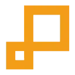

V
VideoMaker.meВидео
«VideoMaker.me» добавляет движение исходной картинке. «VideoMaker.me» также создаёт видеоматериал по заданию.
Раздел «Видео»: варианты ИИ для этой задачи, описания возможностей и переходы к обзорам. Сравните несколько решений на одинаковом примере.
Сделайте короткую видеозаставку с условной городской сценой без сложного сюжета. Опишите время суток, композицию и движение; оцените стабильность зданий и направление камеры, а также отсутствие случайных букв и лишних объектов перед дальнейшим использованием ролика.
Создай короткую заставку: спокойная городская улица утром, деревья у тротуара, мягкий свет. Медленный плавный наезд камеры, здания сохраняют форму, без читаемых вывесок и появления новых автомобилей.

«VideoMaker.me» добавляет движение исходной картинке. «VideoMaker.me» также создаёт видеоматериал по заданию.
Сравнивать «Videotap» с другими инструментами раздела «Создание контента» удобнее на одинаковом исходном материале.
«Vidyo AI» подготавливает короткие фрагменты видеозаписи. Дополнительно «Vidyo AI» превращает материал в основу подкаста.
«Whisper Timestamped» преобразует речевую запись в письменный материал.

Zeemo создаёт субтитры для видео и предоставляет средства их дальнейшей правки. Пользователь может работать с динамическим оформлением, переводить текст и редактировать субтитры группами. Дополнительные видеоинструменты служат для подготовки публикаций, где нужно сочетать исходный ролик с читаемым текстовым сопровождением на разных языках.
«Zeroscope AI» создаёт видеоматериал по заданию. Дополнительно «Zeroscope AI» помогает подготовить персонализированный видеоматериал.
Для «Airpost» сначала определите свою задачу и требуемый результат. Карточка относится к направлению «Видео».
«AIVideoGenerator.me» создаёт видеоматериал по заданию. «AIVideoGenerator.me» также помогает подготовить персонализированный видеоматериал.
AutoPod помогает редактировать подкасты в Adobe Premiere Pro. В наборе предусмотрены работа с несколькими камерами и создание фрагментов для соцсетей в разных форматах. Продукт связывает подготовку основного выпуска с его короткими версиями, когда одно исходное обсуждение используется для нескольких видов дальнейшей видеопубликации.
Сравнивать «Charisma» с другими инструментами раздела «Видео» удобнее на одинаковом исходном материале.
«Choppity» работает с текстом субтитров. «Choppity» также работает с материалами для социальных площадок.

В инструменте «Clarifai» можно исследовать тему и разбирать найденную информацию. Ещё одно направление работы: считывать текст с изображения.
«Depthify AI» подготавливает трёхмерные объекты.
«Epidemic Sound» представлен в разделе «Видео». При выборе проверьте нужную операцию и условия работы с результатом.
Сравнивать «Face Swap App» с другими инструментами раздела «Видео» удобнее на одинаковом исходном материале.
Для «Immersity AI» сначала определите свою задачу и требуемый результат. Карточка относится к направлению «Генерация изображений».
Keyframes Studio создаёт и редактирует видеоматериалы для социальных площадок. В наборе предусмотрены повторное использование контента, адаптация вертикального и горизонтального кадра, автоматические субтитры. Редактор связывает эти операции, позволяя готовить версии исходного ролика под разные варианты публикации и сочетать изменение формата с добавлением текстового сопровождения.

Kling AI создаёт видео и изображения по описанию и исходным кадрам. Для коротких сцен полезно заранее определить действие, движение камеры и признаки, которые должны сохраняться.
Для «Scribbler.so» сначала определите свою задачу и требуемый результат. Карточка относится к направлению «Видео».
«Sora Video AI» создаёт видеоматериал по заданию. «Sora Video AI» помогает подготовить персонализированный видеоматериал.
«SoraWebui» создаёт видеоматериал по заданию. «SoraWebui» также помогает подготовить персонализированный видеоматериал.
Сравнивать «SumyAI» с другими инструментами раздела «Видео» удобнее на одинаковом исходном материале.
SwapperAI создаёт визуальные материалы для демонстрации товаров, включая виртуальную примерку и ролики с ИИ-моделями. В наборе предусмотрены изображения продукции. Инструмент ориентирован на бизнес-презентацию ассортимента, соединяя показ вещи с выбранным образом модели и подготовкой нескольких видов содержимого для дальнейшего использования в электронной торговле.
«Sync labs» согласует движения губ с речевым материалом.

Topaz Video AI используют, чтобы собирать видеосцену по описанию или визуальному исходнику. Ещё одно направление работы: готовить видеоматериалы для публикации.
«Unboring AI» меняет лицо в визуальном материале.
«Videotok» готовит визуальные материалы по заданию. Дополнительно «Videotok» создаёт видеоматериал по заданию.
Сравнивать «Vscoped» с другими инструментами раздела «Видео» удобнее на одинаковом исходном материале.

Vsub используют, чтобы собирать видеосцену по описанию или визуальному исходнику. Ещё одно направление работы: готовить видеоматериалы для публикации.
Для «Webcam Motion Capture» сначала определите свою задачу и требуемый результат. Карточка относится к направлению «Видео».
«What If App» меняет лицо в визуальном материале.
Сравнивать «Wonder Dynamics» с другими инструментами раздела «Видео» удобнее на одинаковом исходном материале.
«Zebracat AI» создаёт видеоматериал по заданию. «Zebracat AI» помогает подготовить персонализированный видеоматериал.
«Atlabs» представлен в разделе «Видео». При выборе проверьте нужную операцию и условия работы с результатом.
Сравнивать «Beatwave» с другими инструментами раздела «Аудио (голос и музыка)» удобнее на одинаковом исходном материале.
Deepshot помогает подготавливать диалоги для видеопроизводства с участием ИИ. В продукте описаны средства создания и повторной обработки движения губ. Настраиваемые функции дополняют работу с речевой частью, связывая подготовку содержания разговора и его визуальное представление в рамках выбранного видео.
Для «Digen AI» сначала определите свою задачу и требуемый результат. Карточка относится к направлению «Создание контента».
«Free AI Video Upscaler» представлен в разделе «Видео». При выборе проверьте нужную операцию и условия работы с результатом.
«HayaiLearn» помогает изучать выбранный язык.
Kingshiper Vocal Remover разделяет вокал и инструментальную часть в аудио или видеодорожке с помощью ИИ. Инструмент поддерживает пакетную обработку материалов и экспорт. Пользователь может подготавливать несколько дорожек, связывая разделение исходной записи с сохранением полученных аудиокомпонентов для дальнейшей работы.
«Neurus» представлен в разделе «Бизнес». При выборе проверьте нужную операцию и условия работы с результатом.
«PixelForge» готовит текстовый черновик по условиям задачи.

В инструменте «Pixop» можно собирать видеосцену по описанию или визуальному исходнику. Ещё одно направление работы: дорабатывать записанное видео.
RecCloud объединяет средства работы с аудио и видеоматериалами. В набор входят субтитры, расшифровка речи, отделение голоса от музыки и краткий разбор видео с ИИ. Перевод, облачное хранение и инструменты редактирования дополняют обработку, связывая извлечение содержимого с организацией и дальнейшей подготовкой медиафайлов.
«Rotor Videos» создаёт видеоматериал по заданию. «Rotor Videos» подготавливает музыкальные варианты по заданию.
«SmartEdit» помогает править исходный видеоматериал.
«Sora AI» создаёт видеоматериал по заданию. «Sora AI» также помогает подготовить персонализированный видеоматериал.
«Speech2text» преобразует речевую запись в письменный материал. Дополнительно «Speech2text» помогает находить материалы по вопросу.
Страница 6 из 8